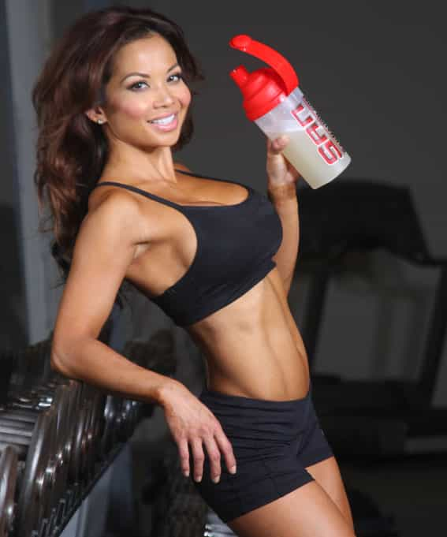
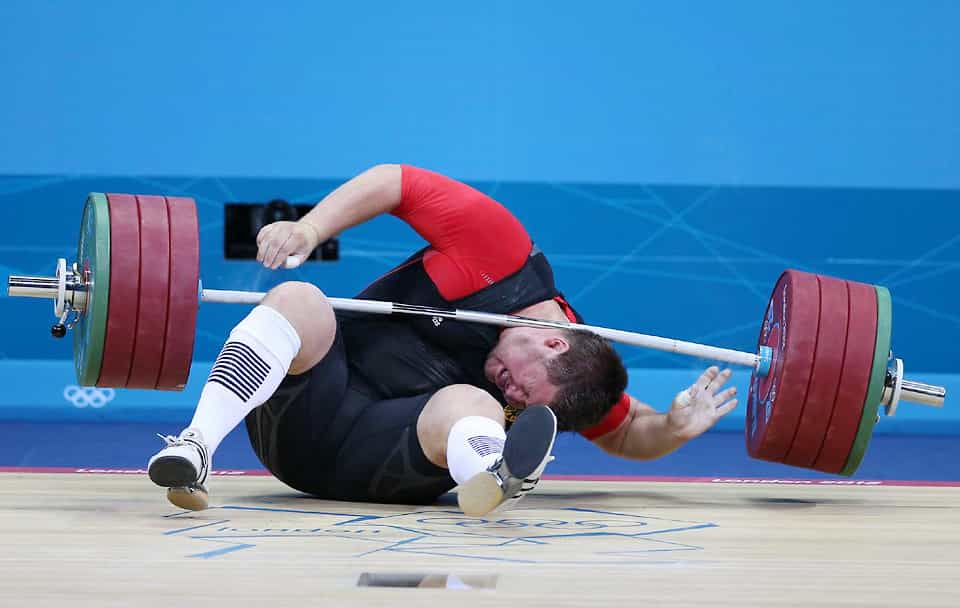
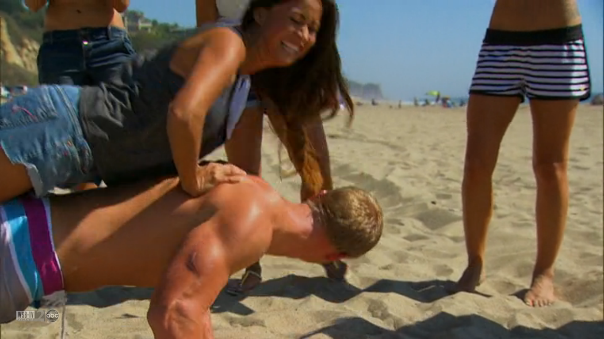

David is a strength coach and bestselling Men's Health author. You can follow him at HowToBeast.com.


While fat loss is undeniably the top goal for men and women today, I’m hoping building muscle will make a comeback for men. It’s time to get over the desire to look like Justin Bieber and skinny teenage pop stars. Sure, women think he’s cute. But they want to squeeze and cuddle with him, not have sex. For that, they want a strong man.
Having muscle mass and the brute strength that comes along with it is both practical and masculine, not to mention healthy. Furthermore, it doesn’t matter how skinny you are – if you don’t have a solid base of muscle then you won’t look good naked (do I have to explain the evils of skinny fat?).
Without further ado, here are the top three most common muscle building mistakes guys make.

Protein has become synonymous with muscle. While it does contain the amino acids that act as the building blocks for muscle, it’s essential that you recognize how much of it you actually need.
Bodybuilding recommendations are bogus. Eating one gram of protein per pound of bodyweight or more each day is excessive. While it’s not going to hurt you physically, it is going to hurt you financially, because protein sources are far more expensive that fat or carbohydrates.
The current scientific recommendation for maximum daily protein intake for strength athletes is about 0.8 grams per pound (1.75 g/kg) of bodyweight (1). I believe this number is even a bit high. But it’s a good number to shoot for to be safe.
The most important thing to realize is that you can achieve this number by incorporating a source of protein (chicken, meat, fish, eggs, etc.) into each of your meals. You don’t need to rely on protein shakes.

We all know that lifting weights leads to the body’s anabolic response that results in hypertrophy (the synthesis of new muscle tissue). I’m not debating this point. But using backwards logic, people often use this as justification for lifting weights almost every single day. More lifting = more muscle gains, right?
Wrong. The anabolic period takes place over a roughly 36 hour period after you lift (2). By slamming more and more lifting sessions into this window you aren’t doing yourself a favor.
The anabolic processes in your body require proper rest and nutrition to work at maximum capacity, not lifting more weights. The take home lesson here is: go hard in the gym, and then focus on resting and eating to recover and build muscle so you can go just as hard on your next session, if not even harder.

Muscle confusion is a concept that’s gained popularity in recent years. It revolves around the concept that by constantly switching the exercises you’re doing, your muscles won’t get used to them, and then they keep growing as a result.
It’s complete and utter bullshit.
Muscles don’t have brains in them. You aren’t confusing anyone, except maybe yourself. What we do know, however, is that by focusing on getting stronger across a small set of exercises, you will build muscle efficiently. To understand this it’s important to note the two main ways you get stronger for any given exercise.
The first way is via neural adaptations. When you do a new exercise for the first 10-20 times, you’ll always see rapid increases in strength. Don’t be fooled, this isn’t because your body synthesizes massive amount of muscle tissue when it encounters a new exercise. This is happening because your brain and nervous system are familiarizing themselves with the movement, and getting more efficient at doing it, with roughly the same amount of muscle (3).
The second way your body adapts to become stronger at a particular exercise is via hypertrophy – by building new muscle tissue (3).
So when you constantly switch between exercises, you’ll acquire the neural efficiency for a wide range of exercises but neglect most of the muscle hypertrophy that you could achieve if you just stuck with a handful of movements that hit every muscle in your body.
This is an excerpt from my new program Body of a Beast. Click here to read reviews and get it now.
Read More: 10 Reasons You Can’t Build Muscle
References:
1. Lemon, P. W. “Protein and amino acid needs of the strength athlete.” Int J Sport Nutr 1.2 (1991): 127-45.
2. MacDougall, J. Duncan, et al. “The time course for elevated muscle protein synthesis following heavy resistance exercise.” Canadian journal of applied physiology 20.4 (1995): 480-486.
3. Sale, Digby G. “Neural adaptation to resistance training.” Med Sci Sports Exerc 20.5 Suppl (1988): S135-45.